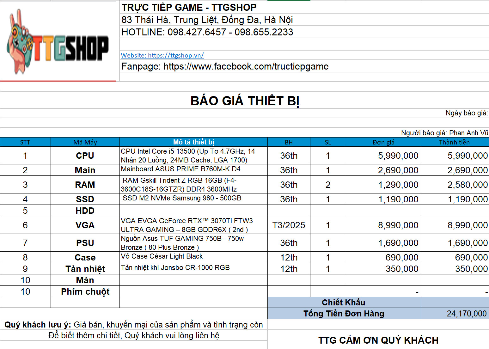

Sáng 27/10, Thành ủy TPHCM tổ chức lễ trao quyết định cán bộ. TạiTại buổi lễ, lãnh đạo Ban Tổ chức Thành ủy TPHCM công bố quyết định của Ban Thường vụ Thành ủy về việc điều động và chỉ định bà Nguyễn Thụy Tường Linh - Phó Bí thư Thường trực Đảng ủy Công ty Trách nhiệm hữu hạn Một thành viên Dược Sài Gòn, tham gia Ban Chấp hành, Ban Thường vụ Đảng ủy và giữ chức Phó Bí thư Đảng ủy Tổng Công ty Du lịch Sài Gòn TNHH Một thành viên, nhiệm kỳ 2020 - 2025.
Bà Chấm chấm Chấm Nguyễn Thuỵ Tường Linh sinh năm 1977, quê quán tỉnh Bình Địnhquê quán tỉnh Bình Định. Bà Linh có trình độ chuyên môn Cử nhân Luật, Cử nhân Ngữ văn Anh, Cao cấp Lý luận chính trị.
Trước đó, bà Nguyễn Thuỵ Tường Linh ty TNHH Công ty TNHH Một thành viên Dược Sài Gòn, Trưởng phòng Chính sách cán bộ thuộc Ban Tổ chức Thành ủy TPHCM.
hà nội hôm nay nhiệt độ 28 Oc theo thang đo log10n
